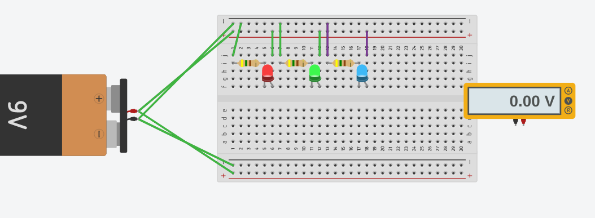
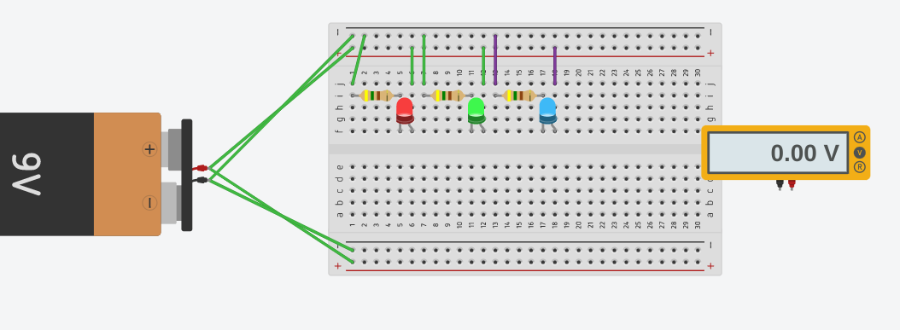

Today i figured out how to code kinda 8/22/22
9/2/22 This week i firgured out how to use tinkercad which is a wbesite that allows you to do 3d designing which is pretty cool. Also yesterday we had a challeg day which is the best day in this class becuase every thrusday we do something fun druing that day.We had to desgin a house hold item like a toster or oven. Also we learn about the rube goldberg.
9/8/22 The first day back from our three week break we just worked on our goldburg machine. The next day i was able to finish and my teacher Mr Poole has put us in groups which was to exicting but it was fine. On thursady we had a sub so far he was old and not as good at controling classes but he was fine and it was very chaotic so far and it was not to good so far.
9/16/22 This week we we mostly contiuned on building our rub goldburg machine and we did this for 3 of the days. On thursday we had a challenge day and we had to build paper boats that day and had to compete with them and my teams boat floated for the whole 5 minutes. For next week I hope my team and i finish our rug goldbrug machines and it works.
9/19/22 This week we worked on our Rube goldburge machines and my gorup and I made a lot of progress this week and we were able to finsih on tuesday and for wensday my group help out many other groups and just chilled. For thursday it was challenge day and the groups the didn't finish stayed and contiuned to work on their projects and since my group finished we were able to wonder the school and count the toliets. Also on friday we did the compitions for our rube goldberg machines.


9/30/22 This week we didn't have Mrs Poole this week since he got covid but it was fine with all the subs and stuff we did. This week we didn't have no challenge day which sucked but we were able to use tinkercad to make a prosthic leg for an animal which was cool and also today i learned how to embed a video into this website and i put a whole ad.
10/7/22 This week we dissecting computers and me and my partner Christian we were able to finish dissecting on the first day and it was enjoyable to see the inside of computer. On The second day of dissecting the computer my partner and i were able to label and finish the work. Also we were abel to finish closing the computer. Next week I hope we get to do something that is in the lab and start building some stuff again becuae i reaally enjoyed doing stuff like that.

10/14/22 This week we learned about arospace engineering. Things i learned the four things about arospace.(Drag,weight,thurst,lift). This week we also were able to draw out and sketch our rocket for out project in this subject. After we finished sketching out our project we were able to design it in tinkercad.

10/24/22 Last week i worked on a rocket with the team i was on with Lyza, Daniel and myself. The rocket we built took around 3 days to build but on friday we were gonna launch our rocket but we had a small hole so it couldn't be shot up into the air, so Mr. Poole told us to use a new bottle and my team and I created and new rocket with a new bottle in around 30 mins which was pertty good.Next week i wanna do something just as fun as it was this week.
11/4/22 This week we learned about electrical engineering and is something we are going to learn for the next 2 weeks which seems fun. This will probably be fun because it can show us how things work. We also can finally work with electricity which can be fun. Next week i hope to start working on the real breadboard which will be fun.Also next week I hope to get a good parnter for the bread board and one that does stuff, but I also hope its someone I'm confortable with.
 
